Ejemplos de estilos de modelaje
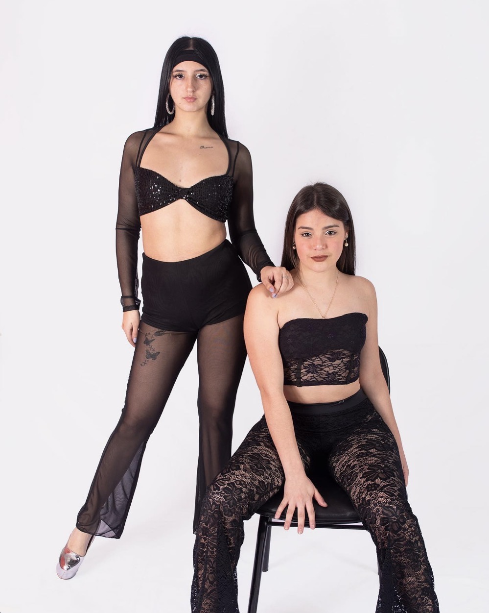
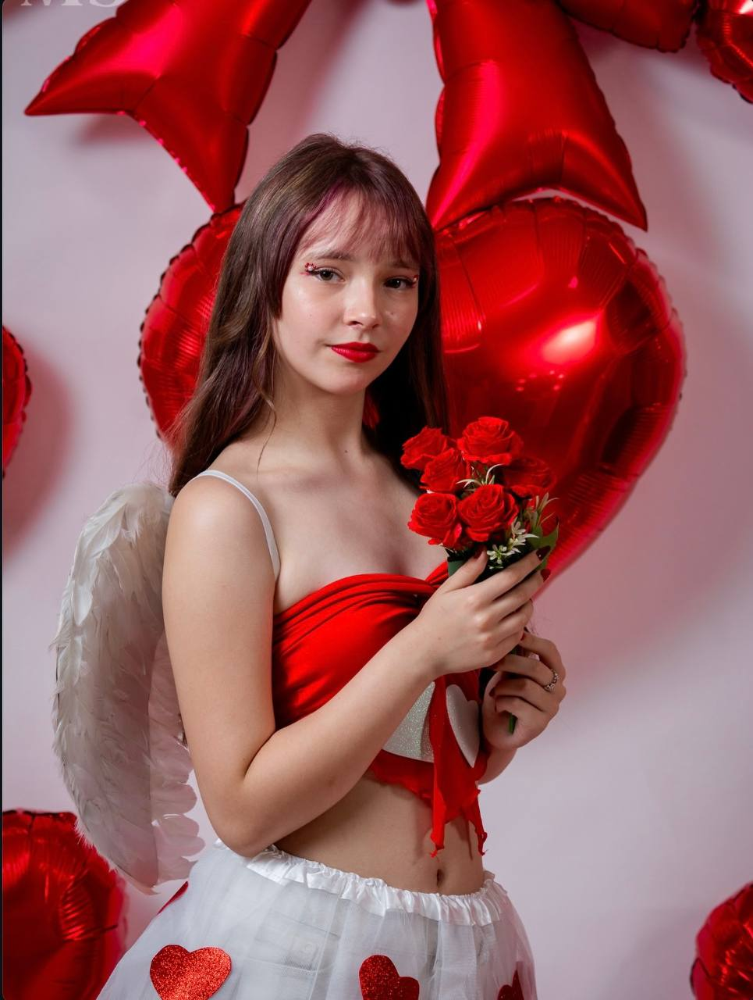
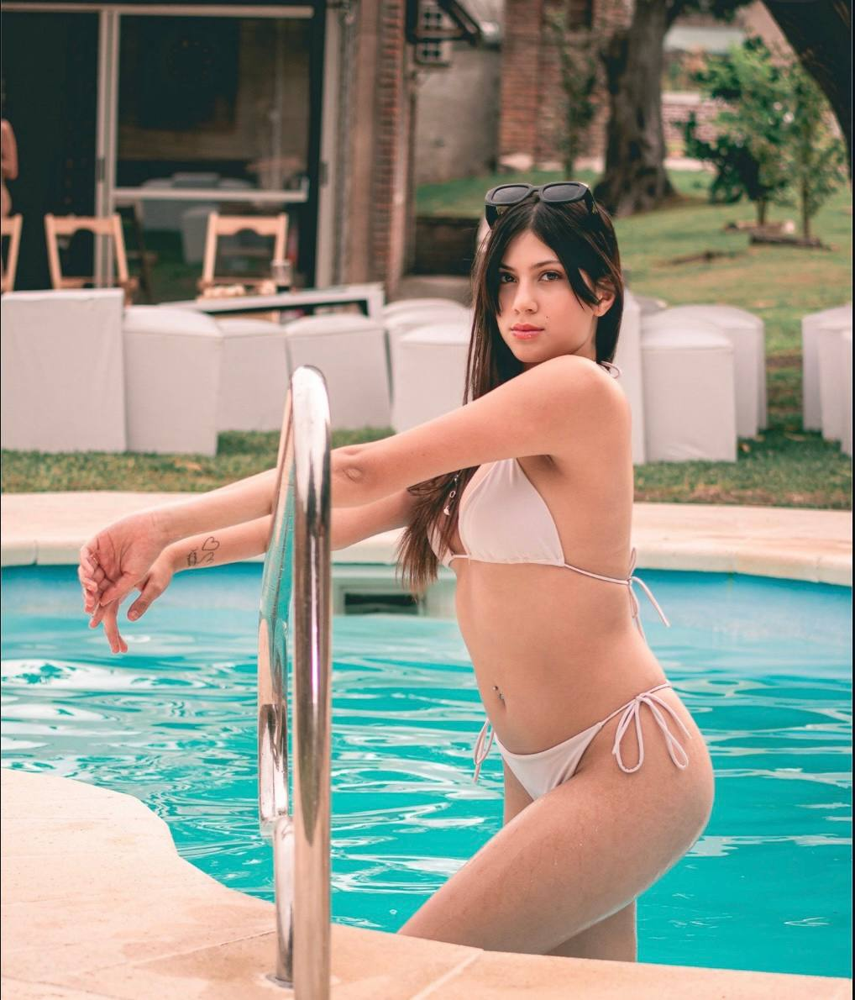
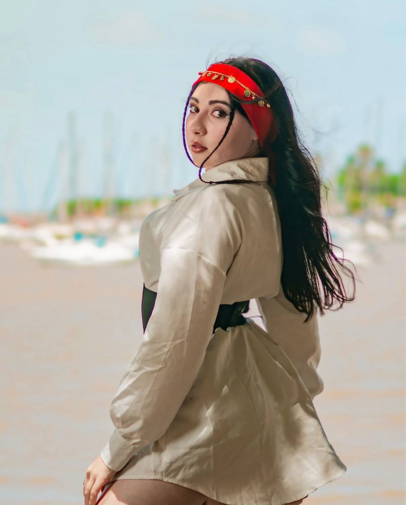
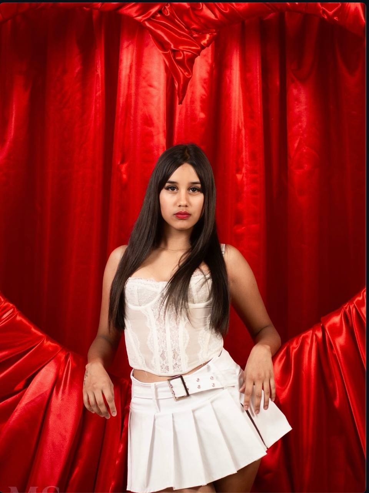
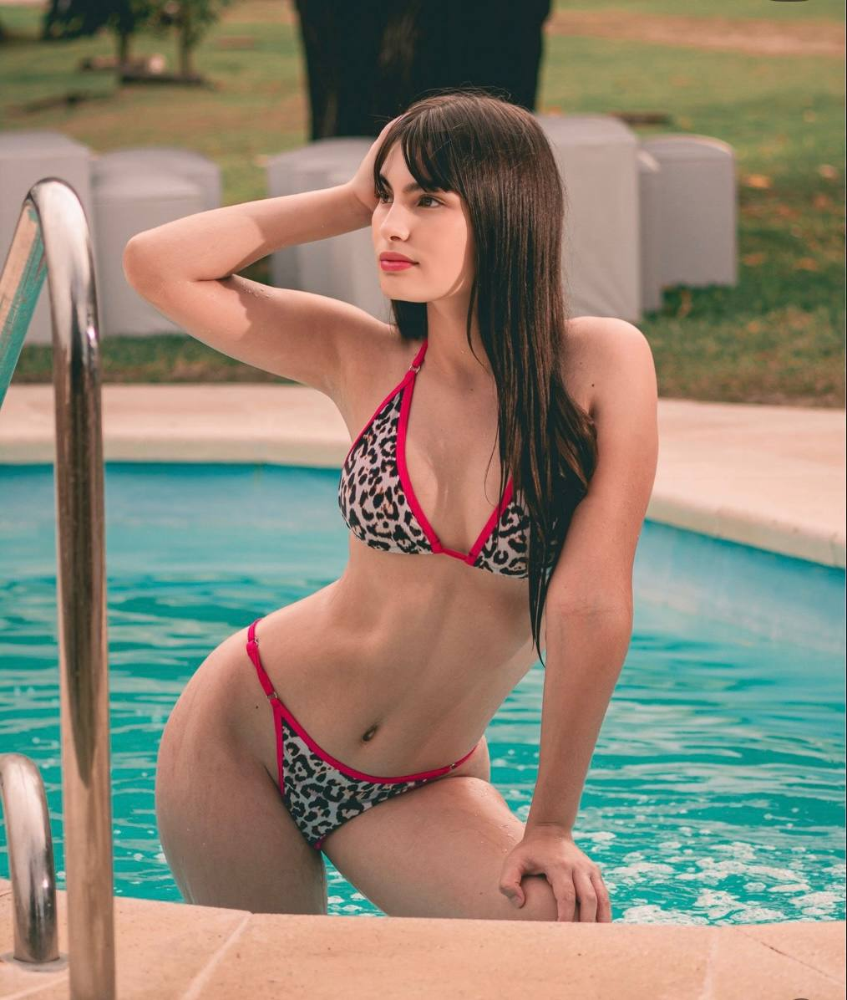
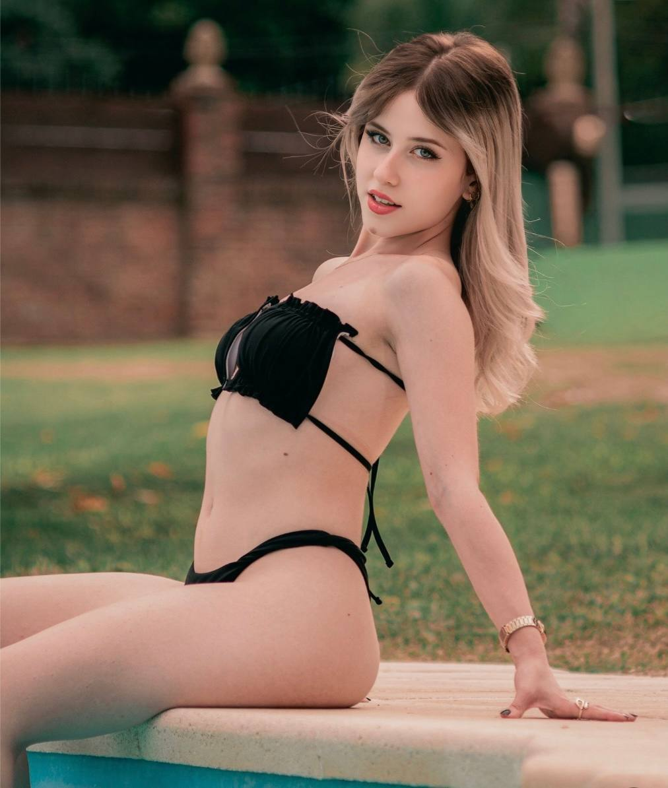
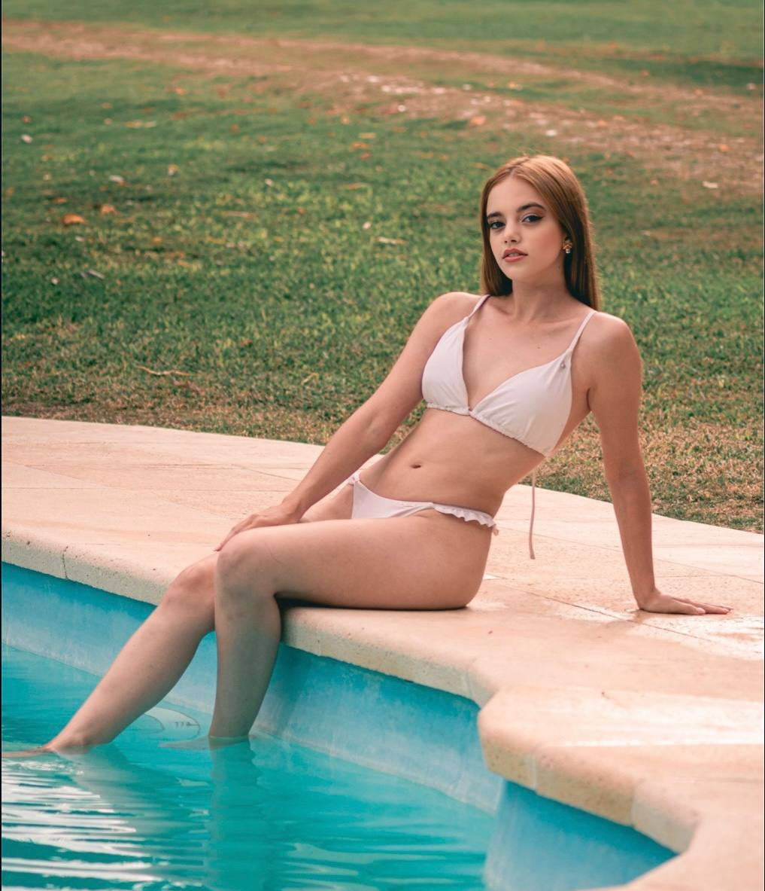
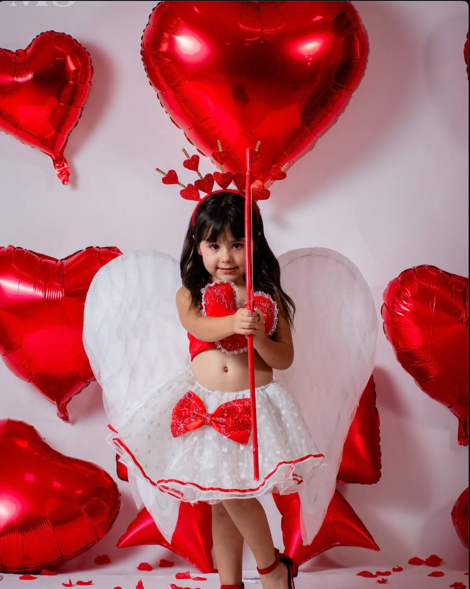
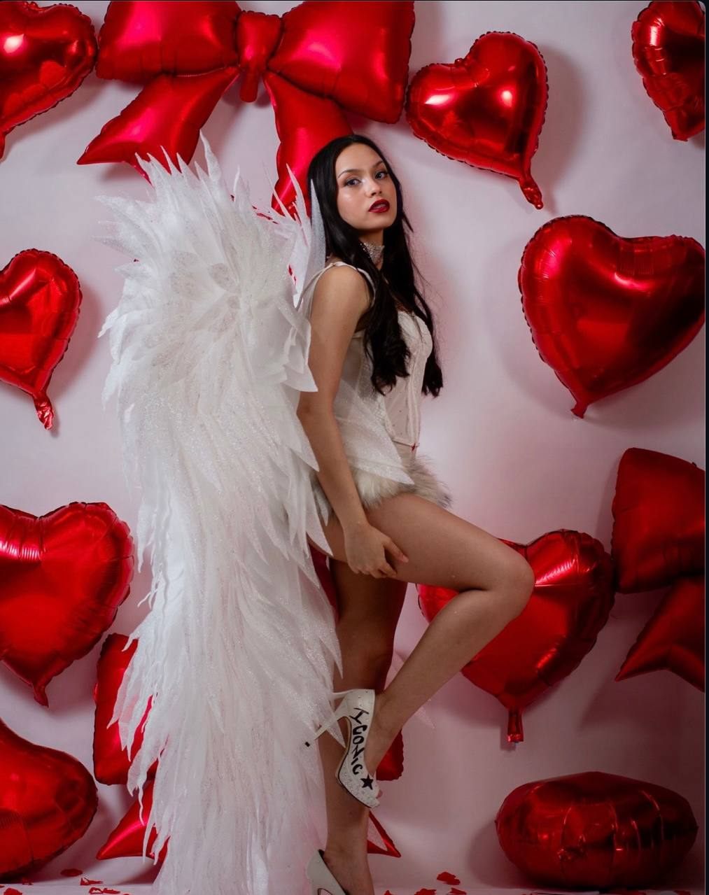
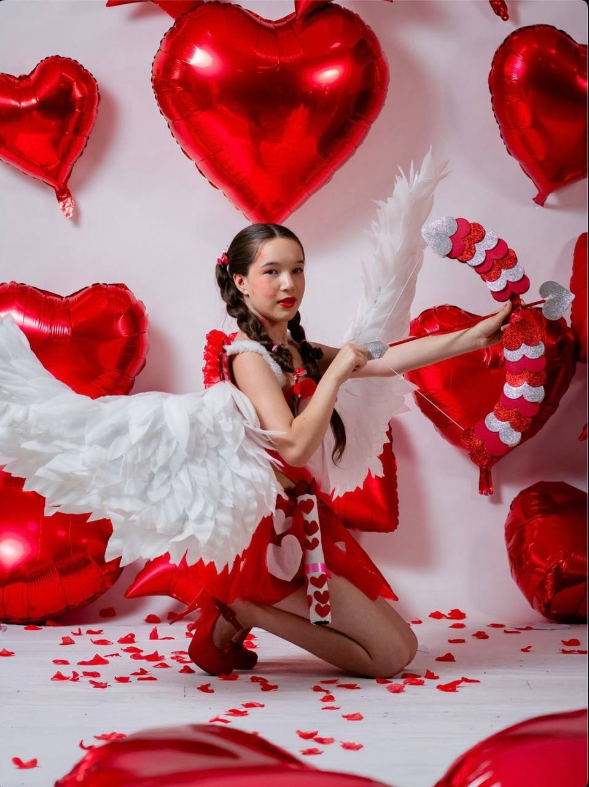
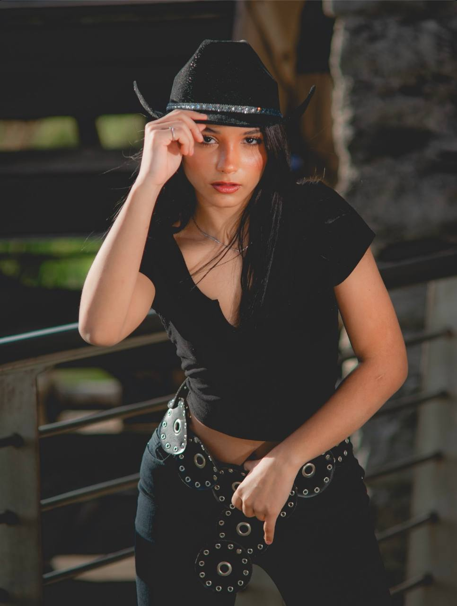
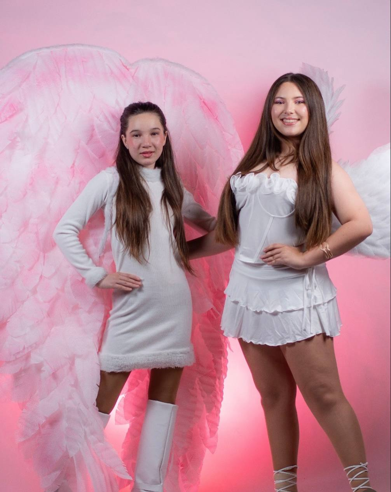
Convocatoria abierta • Con o sin experiencia
Somos un proyecto dedicado a descubrir nuevos rostros para sesiones fotográficas y proyectos visuales. Buscamos personas con o sin experiencia interesadas en participar en diferentes estilos de fotografía. Manejamos estilos de modelaje en lenceria y desnudo artístico
Editorial
Retrato artístico
Lifestyle
Fotografía promocional
Catálogo













Si estás interesada en participar puedes enviar tu solicitud completando el formulario o escribiendo por WhatsApp.
Enviar solicitud¿Necesito experiencia?
No. El casting está abierto para personas con o sin experiencia.
¿Qué tipo de sesiones se realizan?
Fotografía editorial, artística y promocional.
¿Cómo me contactarán?
Por WhatsApp o redes sociales después de revisar la solicitud.